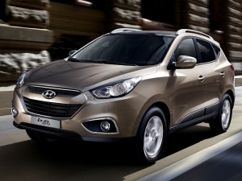
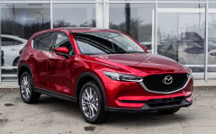
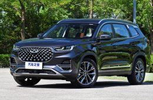
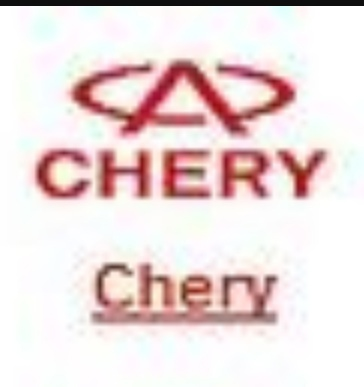
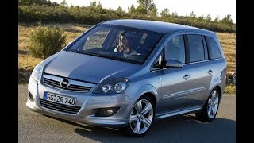
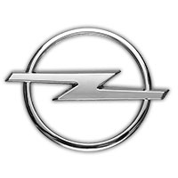
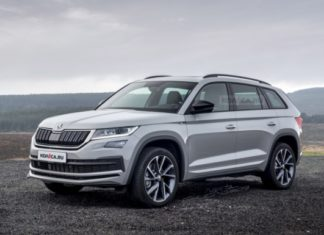

ТОП - 5 машин разных марок, которые бы я купила
В этой статье я расскажу о пяти машинах, которые больше всего меня привлекают не только по виду, но и по функционалу
1.Hyundai ix35

- Цена: от 1 199 900 руб
- Объем двигателя: 1591 см3
- Мощность двигателя: 135 л.с.
- Количество цилиндров: 4
- Минимальный/максимальный объем багажника: 465 л/1436 л
- Максимальная скорость: 178 км/ч
Первая на очереди машина - Hyundai ix35.
Не успев появиться на российском автомобильном рынке, Хендай Ай-Икс 35 приковал к себе пристальное внимание как со стороны автокритиков,
так и любителей корейской марки Hyundai. Все дело в стильном и элегантном дизайне, а также мощном дизельном агрегате.
Качество использованных материалов для сборки дает возможность кроссоверу конкурировать с немецкими производителями.
Российские покупатели могут по достоинству оценить непревзойденный дизайн, первоклассные ходовые качества и высокий уровень автомобиля.
2.Mazda CX5

- Цена: от 2 645 000 руб
- Объем двигателя: 1998 см3
- Мощность двигателя: 150 л.с
- Количество цилиндров: 4
- Минимальный/максимальный объем багажника: 506 л /1620 л
- Максимальная скорость: 199 км/ч
Mazda CX-5 – элегантный высокотехнологичный компактный кроссовер. Его отличительными чертами являются надёжность и безопасность,
высочайший уровень комфорта и великолепная управляемость, мощность и впечатляющая эффективность.
Дизайн обновлённого СХ-5 является воплощением новой философии японского бренда,
а благодаря инновационным технологиям кроссовер оптимально сочетает в себе спортивную динамику и повышенную проходимость с топливной
экономичностью и экологичностью.
3.Chery Tiggo 8

- Цена: от 2 879 900 руб
- Объем двигателя: 1971 см3
- Мощность двигателя: 170 л.с
- Количество цилиндров: 4
- Минимальный/максимальный объем багажника: 193 л /2101 л
- Максимальная скорость: 200 км/ч
Китайская компания Chery вывела в 2020 году на рынок РФ свой флагманский кроссовер — среднеразмерный Tiggo 8.
Машина построена на модульной платформе T1X, которую Chery создала совместно с британским концерном Jaguar Land Rover.
В России машина будет продаваться в двух модификациях салона: 5- и 7-местной с тремя рядами сидений по классической схеме 2+3+2.
Предусмотрены 12 вариантов трансформации салона с возможностью сложить сиденья в ровную площадку размером 1,5 на 2 метра.

4.Opel Zafira

- Цена: от 1 300 000 руб
- Объем двигателя: 1364-1598 см3
- Мощность двигателя: 120 л.с
- Количество цилиндров: 4
- Минимальный/максимальный объем багажника: 152 л/ 1860 л
- Максимальная скорость: 190 км/ч
Компактвэн, выпускающийся европейским отделением концерна General Motors с 1999 года.
На разных рынках этот автомобиль продается и под другими марками - Vauxhall, Holden и Chevrolet.
В Японии был представлен как Subaru Traviq. Дебютировала модель в 1999 году. Второе поколение появилось в 2005 году.
Третье поколение имеет название Zafira Tourer и было представлено на автосалоне во Франкфурте в 2011 году.

5.ŠKODA KODIAQ

- Цена: от 3 990 900 руб
- Объем двигателя: 1395 см3
- Мощность двигателя: 150 л.с
- Количество цилиндров: 4
- Минимальный/максимальный объем багажника: 635 л/2065 л
- Максимальная скорость: 190 км/ч
И самый последний и горячо любимый мной автомобиль. Среднеразмерный кроссовер, выпускающийся с 2016 года чешским автопроизводителем Škoda Auto.
Является наиболее крупным кроссовером в модельной гамме Škoda Auto, предлагается как в пяти-, так и в семиместной конфигурации.